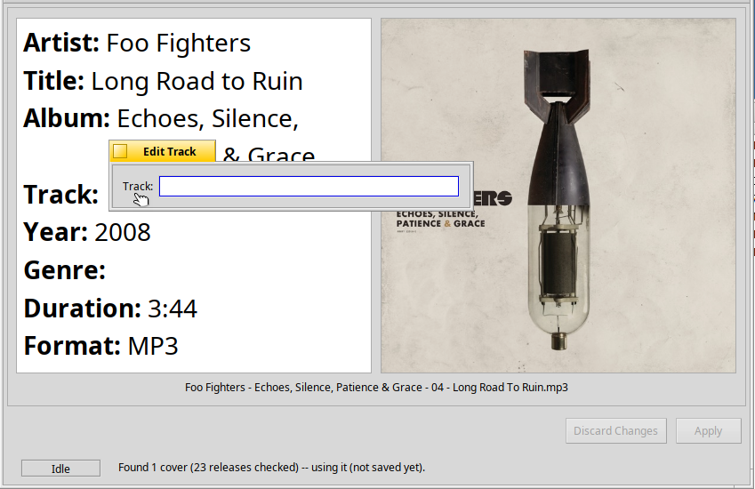

TagField
Names the seven hand-editable tag fields and converts them to and from text.
#include "tagkit/TagField.h"
Detailed Description
The column list, the compact view and whatever edits a value all use these helpers, so they agree on what, for example, “Track” means. The editable fields are Artist, Title, Album, Track, Year, Genre and Comment.

Right-clicking a field of a CompactView opens a small window to edit it. The field's name comes from tag_field_label(), and the text is stored with set_tag_field_value().
Enumerations
enum tag_fieldThe editable fields. |
Functions
const char* tag_field_label(tag_field field)The field's name as shown to the user. |
BString tag_field_value(const TagRecord& record, tag_field field)The field's value as text. |
BString common_tag_field_value(const std::vector<const TagRecord*>& records, tag_field field, bool* mixed)The value a field has in common across several records. |
bool set_tag_field_value(TagRecord& record, tag_field field, const BString& text)Stores edited text into a field. |
Documentation
enum tag_field
The editable fields.
| Constant | Field |
|---|---|
TAG_FIELD_ARTIST | Artist (value 0) |
TAG_FIELD_TITLE | Title |
TAG_FIELD_ALBUM | Album |
TAG_FIELD_TRACK | Track |
TAG_FIELD_YEAR | Year |
TAG_FIELD_GENRE | Genre |
TAG_FIELD_COMMENT | Comment |
TAG_FIELD_COUNT | The number of fields (not a field). |
const char* tag_field_label(tag_field field)
The field's name as shown to the user.
Parameters
field- The field.
Returns
"Artist", "Title", and so on.
BString tag_field_value(const TagRecord& record, tag_field field)
The field's value as text.
Track and Year come back blank when unknown (0), as they are shown everywhere else.
Parameters
record- The record to read.
field- The field.
Returns
The text.
bool set_tag_field_value(TagRecord& record, tag_field field, const BString& text)
Stores edited text into a field.
Leading and trailing spaces are dropped. Track and Year must be blank (meaning unknown) or a whole number from 0 to 9999.
Parameters
record- The record to change.
field- The field.
text- The new text.
Returns
true on success. For anything not acceptable it returns false and leaves the record alone.
BString common_tag_field_value(const std::vector<const TagRecord*>& records, tag_field field, bool* mixed)
The value a field has in common across several records.
Used to show a multiple selection: the value when every record has the same one, otherwise blank. An empty list gives blank, not mixed.
Parameters
records- The records to compare.
field- The field.
mixed- If not
NULL, set totruewhen the values differ.
Returns
The shared text, or blank.